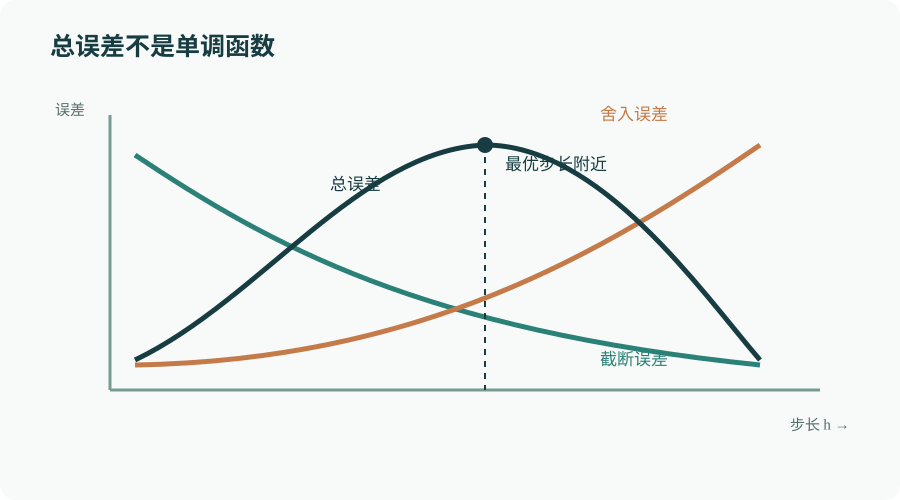
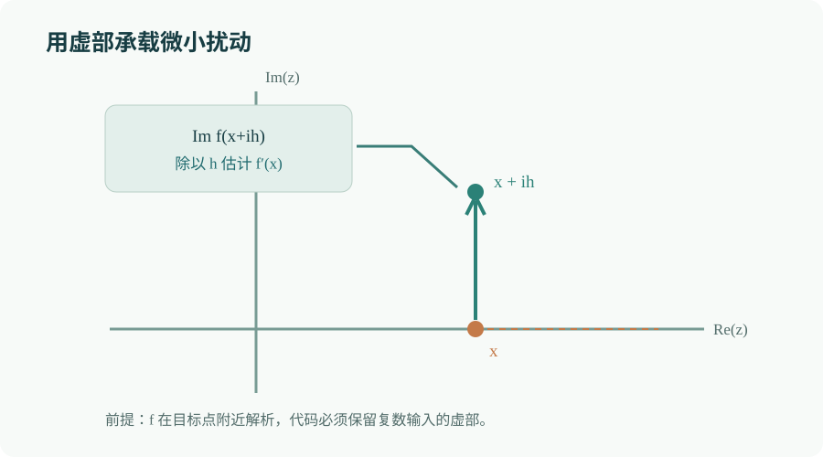

CHAPTER 13 · NUMERICAL ANALYSIS
数值微分：差分模板、最优步长与复数步长
导数逼近为什么不能无限缩小步长？从 Taylor 展开和差分模板，到截断/舍入误差平衡、Richardson 外推与复数步长法。
01 · 导数是局部极限，差分却是两个近似值的相减
导数定义要求 h→0，而计算机只能用有限精度的函数值。若直接取 [f(x+h)−f(x)]/h，当 h 很大时，差分本身偏离极限；当 h 极小时，两个接近的函数值相减会损失有效数字，再除以很小的 h 会放大求值误差。于是“越小越准确”并不成立。
数值微分与数值积分的误差行为也不同：积分常通过累加平滑局部误差；微分则对高频扰动敏感，尤其在测量数据上，微小噪声经过差分除以步长后可能变成很大的导数噪声。
02 · Taylor 展开推导前向、后向与中心差分
假设函数在目标点附近足够光滑。将 f(x+h) 在 x 处展开，再减去 f(x) 并除以 h，得到前向差分；对称地使用 x−h 得到后向差分。二者的一阶截断误差为 O(h)。式 (13.1) 中的 ξ 位于 (x,x+h)；后向差分对应 (x−h,x)。
将左右两侧 Taylor 展开相减，偶次项抵消，得到中心差分。其首个非零截断误差由三阶导数控制，所以在足够光滑且等距采样时具有二阶精度；式 (13.2) 的中间点 ξ 位于 (x−h,x+h)。
同样通过对称 Taylor 展开，可以得到二阶导数的中心差分。它使用 f(x+h)−2f(x)+f(x−h)，误差也是二阶，但对函数值噪声尤其敏感，因为分子中包含三个系数且最后还要除以 h²。
边界点没有左右两侧的完整模板，需要采用前向或后向单边公式；非均匀网格则必须重新推导系数，不能把一个平均步长随意代入等距中心差分。NumPy 的 gradient 在内部点使用二阶中心差分，并在边界使用一阶或二阶单边差分；对于非均匀坐标也接受显式坐标数组。
03 · 高阶模板与 Richardson：提高阶数需要额外信息
若函数值可在更多邻点处计算，可以通过选择有限差分系数，使 Taylor 展开中的低阶误差矩消失。例如五点中心公式对一阶导数达到四阶精度。系数并非凭直觉写出，而是通过要求常数项、二阶项、三阶项等满足相应矩条件求解。
另一条提升精度的路径是 Richardson 外推。若中心差分 D(h)=f′(x)+c₂h²+c₄h⁴+…，那么 D(h/2) 的二阶误差主项缩小四倍。线性组合可消去 c₂h²，把截断误差提升到四阶。
高阶并非免费：五点公式要四次函数求值；外推需要多个尺度的函数值；差分系数的正负组合可能放大函数值噪声。对采样数据，增加阶数之前应先检查数据噪声、采样间距和局部光滑性。

04 · 最优步长：截断误差与舍入误差的平衡点
对中心差分，可将总误差粗略写成 Cₜh²+Cᵣu/h，其中 u 是机器单位舍入误差，Cₜ,Cᵣ 与函数及目标点有关。第一项随 h 减小而下降，第二项却随 h 减小而上升。对这个模型求极小值，可得到步长数量级 u^(1/3)；前向差分对应 u^(1/2)。这些是量级规律，不是每个函数都适用的精确常数。
如果函数求值本身带有噪声上界 δ，分子中的噪声也会被除以 h 放大。此时把机器精度 u 换成实际函数值误差规模通常更符合问题；对传感器数据，还需要先考虑平滑或正则化，而不是只调小步长。
05 · 复数步长：绕开相近实数相减，但有解析性条件
若实函数能在目标点附近解析延拓为复变量函数，把实数步长替换成纯虚数 ih，Taylor 展开中的虚部首项就是 h f′(x)。因此可用虚部除以 h 估计导数，不必从两个几乎相等的实数中相减。

这个技巧要求函数在目标点附近具有解析复扩展，并且实现确实保留复数扰动。abs、max、按实部进行分支、硬阈值、非解析截断，以及把复数强制转换为实数的代码，都会破坏条件或丢掉虚部。它也不消除函数求值本身的误差、下溢和模型噪声。Squire 与 Trapp 的 1998 年论文系统阐述了这种避免消去误差的导数估计方法。
06 · 数据微分与工程边界：先辨认噪声，再选择公式
对离散测量数据，导数估计不是单纯的代数题。若观测为 yᵢ=f(xᵢ)+εᵢ，相邻噪声差在差分后会被除以采样间距；高频噪声因此可能被显著放大。此时可以考虑局部多项式拟合、Savitzky–Golay 滤波、样条平滑或基于噪声模型的正则化，再对平滑模型求导。
边界附近应使用单边模板；非均匀网格应使用由实际节点位置推导的系数；当导数本身不连续时，差分值可能依赖取样方向。高阶公式只改善平滑函数的截断误差，不会自动修复不连续、噪声或模型错配。
原始资料与延伸阅读
理论结论按原始数学资料与维护方文档交叉核对；本页图解、数值表和代码是独立构造的教学示例。
- NCSU · Error in Numerical Differentiation：函数求值误差、截断误差和最优步长的平衡。
- NumPy · gradient：内部点中心差分与边界单边差分，以及非均匀网格间距。
- Squire & Trapp (1998) · Using Complex Variables to Estimate Derivatives of Real Functions：复数步长微分避免经典差分中相近实数相减导致的消去误差。